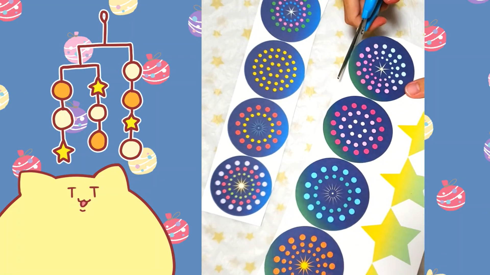
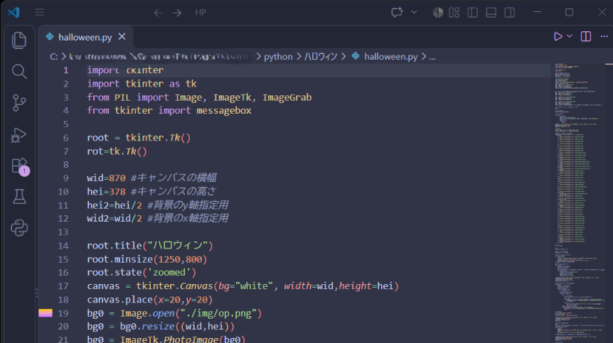
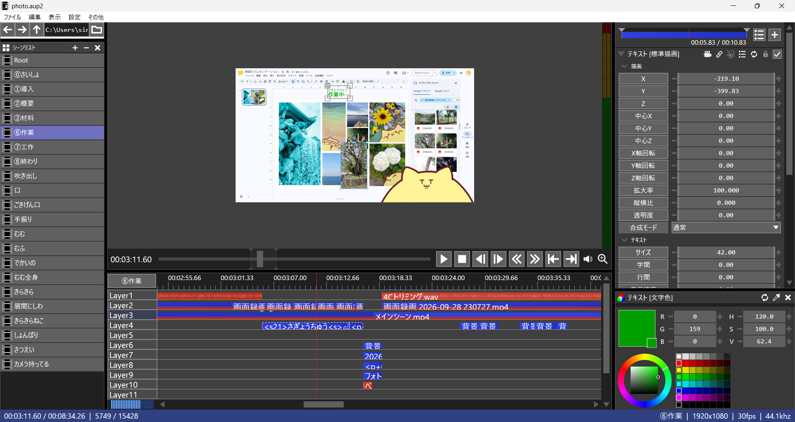

ぴこ箱って？
ぴこ箱はあなたの「作りたい」を応援します。

ぴこ箱はpikoが提供する「つくる」を楽しむための子ども・大人向けデジタルスキル向上サービス＋αです。piko個人による個人事業です。
イラスト制作、デザイン、2D・3Dモデリング、動画作成、楽曲制作、HP作成、プログラミングなどなど、パソコンをツールとして使い、あなたの「作りたい」を探すところからを応援します。
もちろん既にやりたいことが決まっている方のスキルアップも応援します。

「何がしたいかわからない」から「やってみたい」を見つける
「何がしたいかわからない」「やりたいことがない」というのは「何ができるか知らない」状態です。最初はみんなここからスタートします。
何かをやりたいと思ったときにパソコンというツールは非常に便利で、一台あればイラスト、文章、デザイン、モデリング、動画、音楽、プログラミングなど様々なことに挑戦できます。
最初からどれか一つに絞る必要はありません。色々なものに触れてみて、あなたやお子さんの「やってみたい」を見つけるお手伝いをします。
「何ができるの？」から「どうやるの？」へ
「やってみたい」ことが見つかったら、今度はどうやってそれを作るのかを楽しみながら学びます。
イラストを描きたいと思えればお絵描きソフトを試してみたり、HPを作りたければまずどんな方法があるか学んでみるなど、やってみたいことの「どうやるの？」(入門部分)をサポートします。
「作りたいものが作れる」へ繋がる
やってみたいことを見つけ、どうやって作るのかを知ったら、次はこんなものを作りたい、今度はこんな風にしたいという気持ちが自然と湧いてきます。
やりたいことが見つかり、作りたいものが作れるようになる、表現力と自信に繋がる、そのための伴走支援をします。
プログラミングは、自己表現だ。

私は「表現」が大好きです。自分がするのももちろんですが、人がしたものを見るのも大好きです。
表現したいものがあるのに、やり方がわからないせいでできない、どうしたらいいかわからないというのはとてもつらく、悔しく、また勿体ないことです。
私自身それで苦しい思いをした経験があるので、表現したいという気持ちのある人が同じ目に遭わないよう応援したい、またたくさんの大人や子どもたちに表現の楽しさを知って欲しいと考えています。
画面の中で終わらないパソコン工作
私は児童館でパソコン講座担当として子どもたちにパソコン工作を提供してきました。
子どもたちがどうやったら楽しく自己表現を通しながらパソコンの使い方に触れられるかを考え、いつも試行錯誤して企画を作っていたので、児童館に実際に訪れることのできる子どもたち以外にもこのパソコン講座を受けてほしいという欲が出ました。
通常のパソコン教室やプログラミング教室では画面の中で終わってしまい、発表の機会はあってもその日何をしたのかお家の方に共有しづらい難点がある一方、パソコン工作は作ったものを持って帰ってお家の方に見てもらい、「今日はこんなものが作れた、こんなことができたんだ」というのが見てわかる、家族の話題のタネにできるのが特色であると思っています。
AI時代に必要なのは「表現力」
AIが台頭する時代となり、一部の作業はAIが代替できるようになってきました。今後人間に求められるものの一つはAIからは出力できない、人間らしい表現力だと思います。
その人が経験したもの、見てきたもの、感じたことを表現することはAIはもちろんその人にしかできないことです。
ついでに言うと、プログラミングなんかはもうAIに「こういうコード書いて」と言えばサクッと書いてもらえる時代になりました。テキストエディタに手打ちしていた時代とは違います。便利ですね。
けれど、何のために何を作りたいのか？誰に伝えるためにどんな風に作るか？というのはAIは決められません。こうなるともうお分かりのように、それって表現の分野ですよね。
要するに、プログラミングは表現のためのツールでもあるのです。
プログラミングだって自己表現
小学校でプログラミングが必修となりました。保護者の皆さんの中には、自分の子ども時代にはなかったもの、自分が聞かれてもわからない分野等の理由で不安を感じていらっしゃる方もいるのではないでしょうか。
しかしそもそも小学校で求められているのは「プログラミング的思考」であって「プログラミングスキル」ではありません。
料理をするときにまず材料を買って、調理器具を出して、使用する調理器具は具体的に何と何と何で、次にこの野菜を洗って…というような手順を言葉にして考えられるようになればよいのです。こう聞くと少し未知のものに対する不安も解消されるでしょうか。
前述の通り、プログラミングは表現のための手段でもありますので、美術や音楽と一緒だと思ったら身近に感じられるようになるでしょうか。
そのコードで何を作るかはもちろんですが、「いかに美しいコードを書くか」「いかにシンプルな作りにするか」のような部分もプログラミングによる表現の楽しみの一部です。
まあなんというかそんな感じで、プログラミングとかパソコンスキルとか、一見難しそうに見えるものを味方につけて、一緒に自己表現をやってみませんか？
pikoについて

立教大学文学部教育学科卒。個別・集団指導塾や学童保育での指導経験あり。児童館でのパソコン講座担当として4年間従事し、100人以上の子どもたちにパソコン工作を教える。現在はタブレットそろばん教室「そろタッチ」と家庭教師、プログラミング放課後デイで勤務する傍ら、地域のイベントにてパソコン工作のワークショップなどを開催。
大学時代の小学校学習サポーター経験のエッセイで千葉文学三賞受賞。千葉市の地域劇団に所属。
絵を描くのが好き。本を読みたい。ギター練習中。
まのさばプレイ中。推しは城ケ崎ノアちゃん。
対応可能ソフト・言語一例
- Microsoft Office (Word, Excel, PowerPoint)
- Google Workspace(Docs, Sheets, Slides)
- Live2D
- Blender
- TinkerCAD
- Canva
- Clip Studio Paint
- ibis paint
- AviUtl/AviUtl2
- Scratch
- VBA
- HTML/CSS
- Minecraft(メイクコード)
ここに載ってなくても勉強します。お気軽にご相談ください。